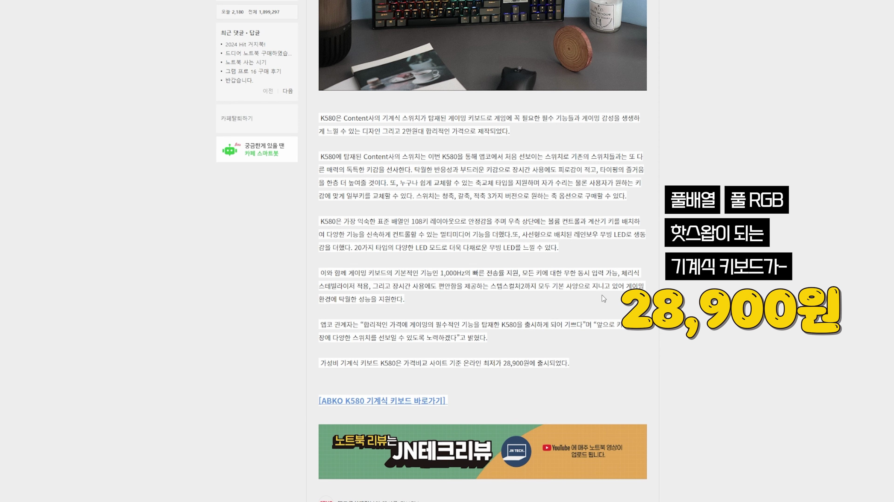

이 포스트에서는 가격 대비 성능이 뛰어난 저렴한 기계식 키보드인 엡코 K580에 대한 리뷰를 상세히 소개합니다. 풀배열, 풀RGB, 핫스왑 기능을 갖춘 이 기계식 키보드는 저렴한 가격에 많은 사용자들의 관심을 받고 있습니다. 이 글을 통해 여러분도 기계식 키보드의 매력을 느껴보세요!

제품 소개 및 가격
- 28,900원에 출시에 대해 설명
- 풀배열, 풀RGB, 핫스왑의 장점 강조
저렴한 가격에 풀배열 및 RGB 백라이트가 탑재된 핫스왑 기계식 키보드가 출시되었습니다.

구매 경험 및 특징
- 축별로 각각 구매한 경험 공유
- 저렴한 가격에 3개 구매한 사실 강조
각기 다른 스위치를 경험해보기 위해 3개의 키보드를 구매하였으며, 세 개 모두 합쳐도 다른 키보드 한 대보다 저렴하다는 점을 강조합니다.

기계식 키보드의 입문
- 풀배열 키보드에 대한 이해 공유
- 예쁜 텐키리스 키보드와의 조합 회상
기계식 키보드를 처음 입문할 때 풀배열이 좋으며, 이후에는 텐키리스로 넘어가는 경우가 많음을 알려드립니다.

RGB 기능 및 스위치 교체
- 풀 RGB 백라이트 소개
- 스위치 핫스왑에 대한 장점 설명
풀 RGB 백라이트 기능이 있으며, 스위치 핫스왑이 가능하여 다양한 스위치를 사용해볼 수 있는 장점을 설명합니다.

단점 및 개선 사항
- ABS 키캡 문제 설명
- 무선 옵션 부재 언급
키캡 재질의 저렴함으로 인해 사용 후 손상의 위험이 있으며, 무선 기능이 없어 유선 연결만 가능하다는 단점을 언급합니다.

이벤트 공지
- 구독자 대상 제품 나눔 정보 제공
리뷰 종료 후 구독자들에게 제품을 나누어 줄 예정이며, 참여 방법은 영상 설명란에서 확인해달라는 공지를 합니다.
Tags: #엡코 K580 #기계식 키보드 #RGB 백라이트 #핫스왑 #가성비 #입문용 키보드 #저렴한 키보드